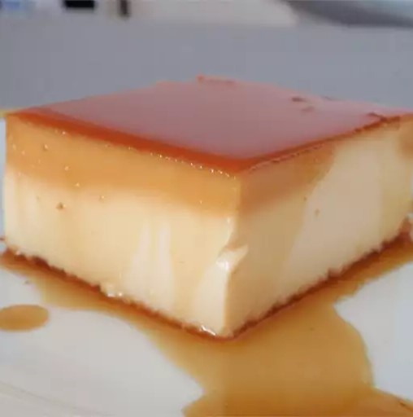

Creamy Caramel Flan

Description
This flan recipe is a cross between egg custard and cheesecake. It is rich and delicious.
Ingredients
- ¾ cup white sugar
- 1 (8 ounce) package cream cheese, softened
- 5 large eggs
- 1 (14 ounce) can sweetened condensed milk
- 1 (12 fluid ounce) can evaporated milk
- ~optional~1 teaspoon vanilla extract
Steps
- Preheat the oven to 350°F or 175°C.
- Cook sugar in a small, heavy saucepan over medium-low heat, stirring occasionally, until golden. Pour caramel into a 10-inch round baking dish, tilting to coat the bottom and sides. Set aside.
- Beat cream cheese in a large bowl until smooth. Beat in eggs, one at a time, until well incorporated. Mix in milks and vanilla until smooth. Pour into the caramel-coated baking dish.
- Line a roasting pan with a damp kitchen towel. Place the baking dish inside the roasting pan on the towel, then place the roasting pan on the oven rack. Fill the roasting pan with boiling water to reach halfway up the sides of the baking dish.
- Bake in the preheated oven until the center is just set, 50 to 60 minutes. Cool on a wire rack for 1 hour, then place in the refrigerator until completely cooled, 8 hours to overnight.
- To unmold, run a knife around the edges of the baking dish and invert onto a rimmed serving platter.
Back to main page